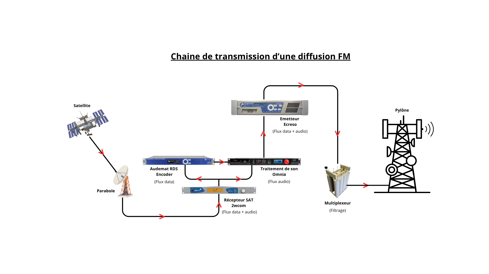

Diagnostic d’une perte de signal
Contexte
Un site de diffusion présentait une interruption de service
Architecture simplifiée

Problème identifié
Absence de signal en sortie d’un équipement de diffusion
Démarche
- Analyse du récepteur satellite 2wcom : baisse du niveau RF en entrée
- Contrôle de la liaison : parabole → récepteur SAT 2wcom
- Analyse de l’état de la parabole
Actions réalisées
- Contrôle de la qualité des connecteurs : mauvais branchement, étanchéité, lame cassée
- Vérification de l’état des câbles : surchauffe, courbure, détérioration
- Analyse du pointage satellite avec appareil de mesure : Hexylon
Résultat
Repointage satellite permettant la remise en service du site et le rétablissement de la diffusion
Compétences développées
- Diagnostic multi-niveaux
- Analyse de transmission
- Intervention sur équipements télécoms
- Résolution terrain
Déploiement d’infrastructures télécom – Projet APRR
Contexte
Reprise d’environ 90 sites APRR par towerCast à la suite d’un appel d’offres
Travaux réalisés
Avant intervention
- Configuration en agence des équipements : modem 4G HubOne, PDU APC, switch Cisco, RAMI FDI 804
- Gestion des accès aux sites techniques : mise en place d’un protocole d’accès autoroutier avec APRR, recensement des sites dans SharePoint
- Préparation du matériel : consommables, outillage, EPI
Pendant intervention
- Installation et mise en service sur site : raccordements, connexion réseau, remontées d'alarmes, nettoyage, étiquetage
Après intervention
- Suivi et contrôle du projet à distance : rectification et adaptation du matériel/configuration, recherche de pannes
Compétences développées
- Déploiement d’infrastructures
- Préparation de matériel
- Coordination d’interventions terrain
- Supervision à distance
Contact
Je me tiens à votre disposition pour toute information complémentaire ou pour un entretien
Courriel : noe.crillon@gmail.com
Téléphone : +33 6 58 94 85 55
LinkedIn : Voir mon profil LinkedIn
Référence professionnelle
M. Laurent BATHELIER - Responsable Région Nord-Est
Maître d’apprentissage – towerCast
Téléphone : 06 71 60 81 97
Email : lbathelier@towercast.fr